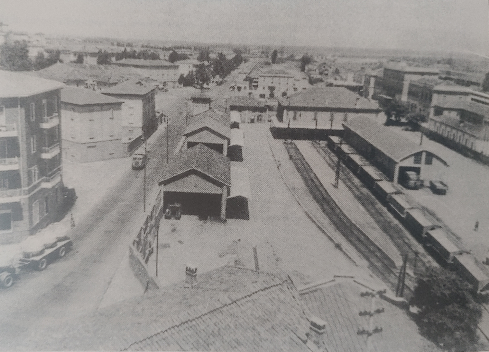
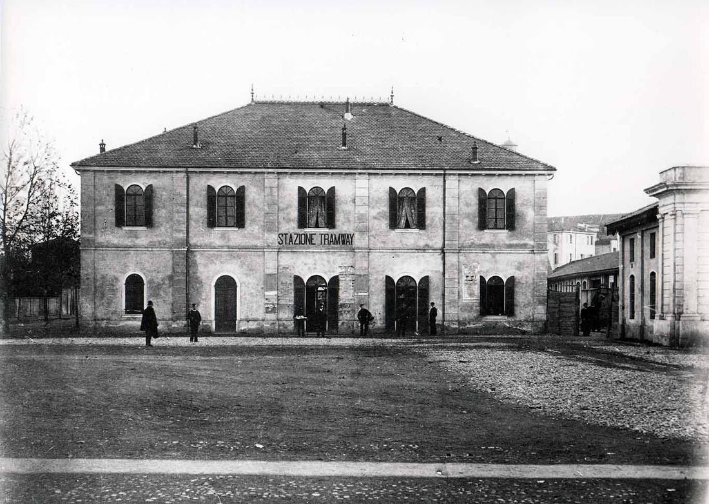
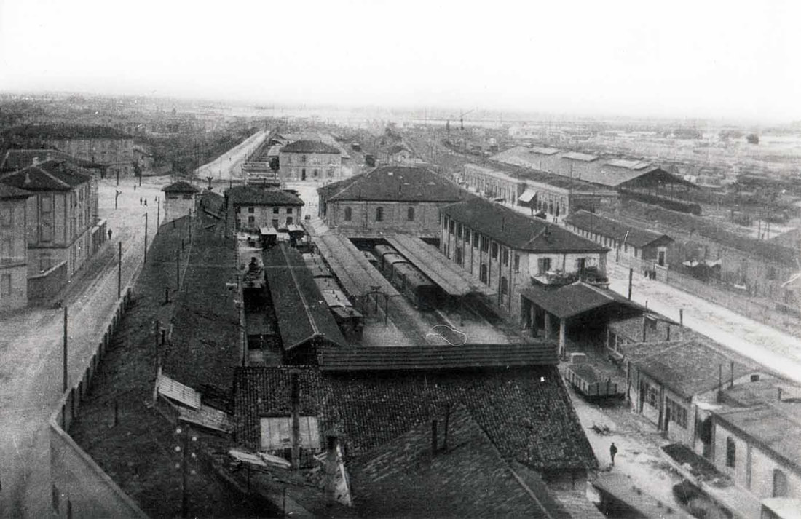
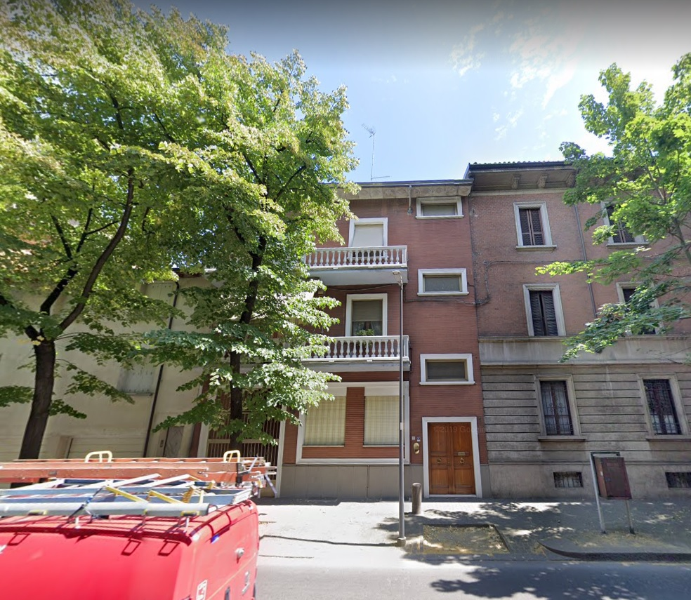
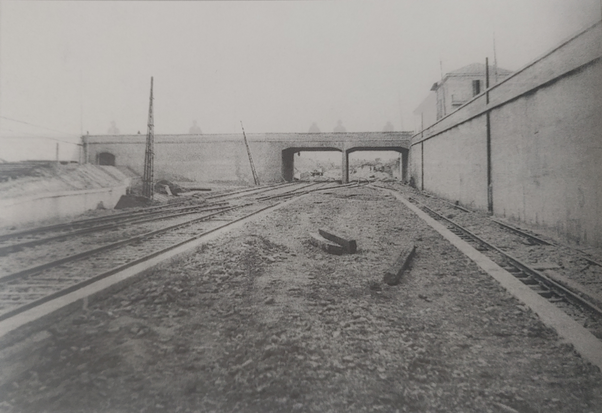
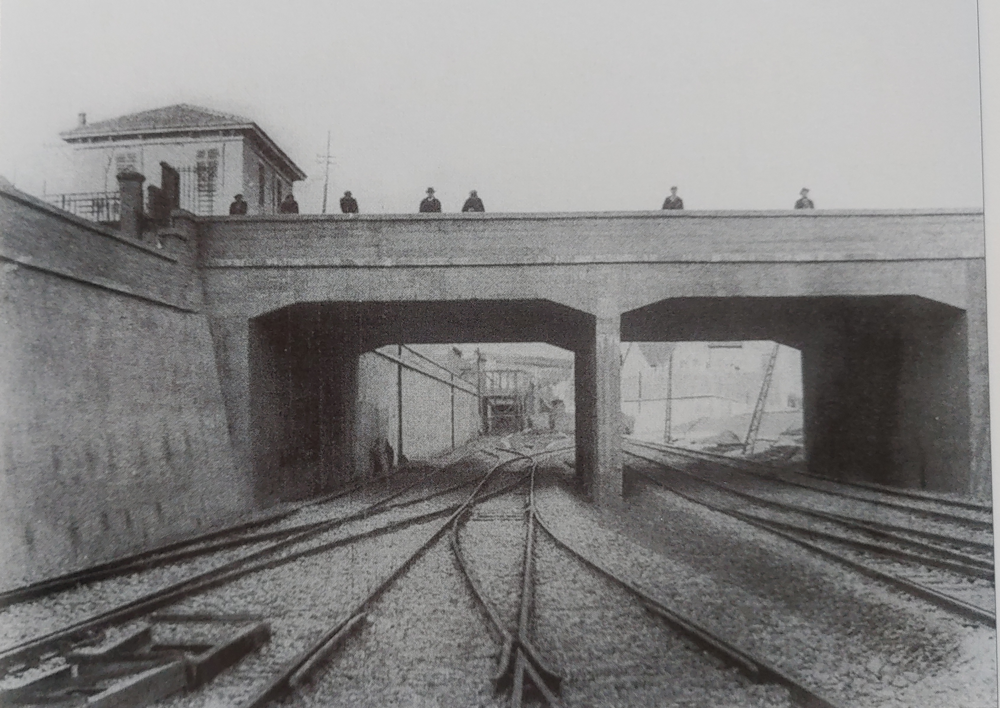
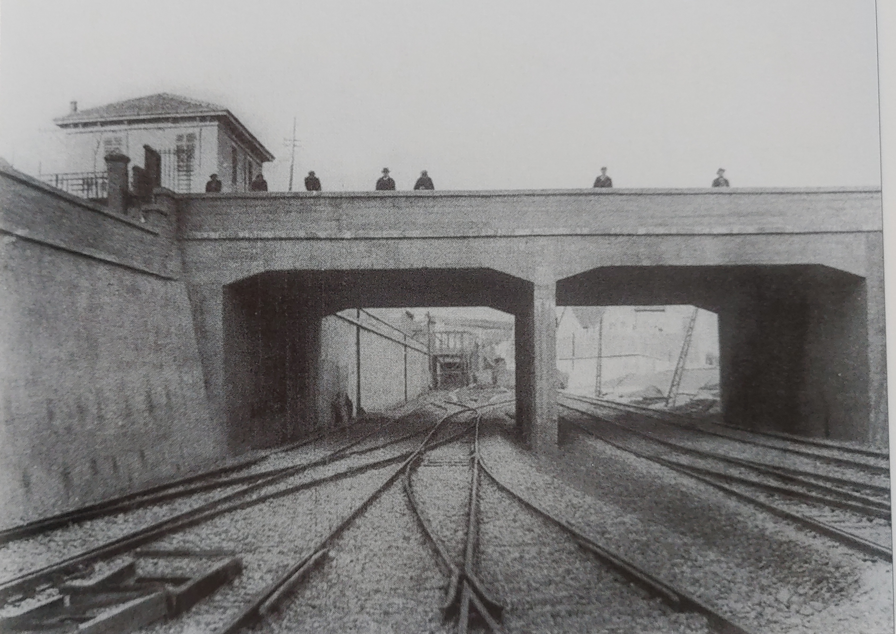

Ferrovia Piacenza-Bettola
In questo progetto ho ordinato geograficamente il materiale fotografico, sia storico sia attuale, che ho raccolto sulla dismessa linea ferroviaria Piacenza-Bettola, che funzionò tra il 1933 ed il 1967.
Per vedere il progetto bisogna far scorrere i capitoli di testo. Ogni volta che si passa a un nuovo capitolo, la vista della mappa si aggiorna, mostrando la posizione descritta nel testo.
Per ingrandire una foto, fare click sulla foto stessa aprendola in una nuova finestra. Poi fare click sul "tasto indietro" del browser per chiudere la finestra e continuare con il progetto.
È possibile cambiare la vista della mappa con il controllo del mouse:
I bottoni azzurri in alto a sinistra permettono di accendere/spegnere i vari elementi della mappa.
Riccardo Rocca (email), Novembre 2020
Stazione di Piacenza
Vista del lato d'ingresso alla Stazione (costruita nel 1880) con il Bar Sorgente in primo piano (antica postazione delle guardie del dazio): Vista dal lato pensiline con una littorina passeggeri: Vista dello scalo ferroviario nel 1964, con una serie di carri per il trasporto della marna proveniente dalle cave della Val Nure:  La facciata della Stazione al tempo dei tram a vapore (TRAMWAY):  Lo scalo ferroviario ai tempi dei tram a vapore. In secondo piano sulla destra si riconosce l'area delle Ferrovie dello Stato con la Stazione (con il corpo centrale senza ancora l'attuale piano rialzato) e la tettoia delle pensiline: {kind=link}
{kind=link}
{kind=link}
{kind=link}
{kind=link}
Deposito Berzolla
Foto del deposito in costruzione con l'insegna della SIFT (Società Italiana Ferrovie e Tramvie): Il deposito come si presenta oggi:{kind=link}
{kind=link}
 In cima ai portoni è visibile la sede per il passaggio del cavo elettrico
che alimentava le locomotive:
In cima ai portoni è visibile la sede per il passaggio del cavo elettrico
che alimentava le locomotive:

Sottopassaggio della Lupa, lato stazione
Foto d'epoca del sottopassaggio dopo aver lascato la stazione. In alto a sinistra si riconosce uno scorcio dell'edificio dei Magazzini Generali, che si affaccia su Via Cristoforo Colombo: Stessa vista come appare oggi, lungo la pista ciclabile che collega il parcheggio del centro commerciale "Borgo Faxal" con la rotonda tra Viale Patrioti e Via IV Novembre. Sulla sinistra si eleva il terrapieno di un binario che si immetteva su Via Cristoforo Colombo:{kind=link}
 Cancello su Via dei Pisoni: da qui usciva un binario che proseguiva per
Via Cristoforo Colombo:
Cancello su Via dei Pisoni: da qui usciva un binario che proseguiva per
Via Cristoforo Colombo:

Sottopassaggio della Lupa, lato Magazzini Generali
Il sottopassaggio visto dall'altra parte, in direzione della stazione. Sulla destra si nota l'imbocco di un altro tunnel che si collegava con la rete delle Ferrovie dello Stato: Vista laterale dell'edificio principale dei Magazzini Generali:
Vista laterale dell'edificio principale dei Magazzini Generali:
{kind=link}
Fermata Piacenza Lupa
In Viale Patrioti c'era l'ingresso di una seconda fermata in città, con biglietteria e accesso ai binari attraverso una pensilina. L'antico ingresso si trovava al numero 5 di Viale Patrioti ed è stato sostituito da un edificio residenziale:  La pensilina invece si è conservata ed è ancora visibile lungo l'attuale pista ciclabile:{kind=link}
 Vista della pensilina dal lato opposto, dal retro degli edifici che
si affacciano su Via Alessandro Bolzoni:
Vista della pensilina dal lato opposto, dal retro degli edifici che
si affacciano su Via Alessandro Bolzoni:

Sottopassaggio della Farnesiana
Foto d'epoca del sottopassaggio della Farnesiana. A sinistra si distinguono la rampa e l'imbocco di un tunnel che permettevano di raggiungere i Magazzini Generali:  Vista attuale del sottopassaggio:{kind=link}
 Vista del lato opposto, dell'epoca e attuale:

Vista del lato opposto, dell'epoca e attuale:

{kind=link}

Stazione di Smistamento Piacenza-Cornigliana
All'esterno della zona urbana (dopo l'attuale Via Conciliazione), sorgeva la Stazione di Smistamento (lungo l'attuale Corso Europa).
Installazioni Militari
Prima e dopo la Stazione di Smistamento si staccavano alcune diramazioni dirette a varie installazioni militari: